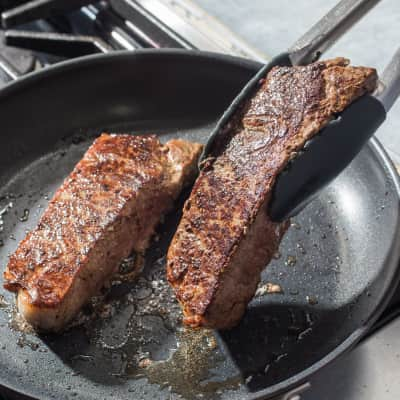

Cold Sear Steak

Fat steaks from the stovetop mess-free
How to make steaks at home easily without setting off your smoke alarm!
Start steaks in a cold pan to greatly reduce smoke generated and mess.
Ingredients
- 2 boneless sirloin strip steaks (1.5 inches thick, room temperature)
- 2 or 3 garlic cloves
- 2 tablespoons fresh rosemary leaves
- 3 tablespoons (45g) unsalted butter
- 1 teaspoon pepper
- salt (to taste)
Steps
- Pat steaks dry with paper towels and sprinkle both sides with pepper. Place steaks 1 inch apart in cold 12-inch nonstick skillet. Place skillet over high heat and cook steaks for 2 minutes. Flip steaks and cook on second side for 2 minutes. (Neither side of steaks will be browned at this point.)
- Flip steaks, reduce heat to medium, and continue to cook, flipping steaks every 2 minutes, until browned and meat registers 120 to 125 degrees (for medium-rare), 4 to 10 minutes longer. (Steaks should be sizzling gently; if not, increase heat slightly. Reduce heat if skillet starts to smoke.)
- Add butter, rosemary and garlic to add flavour to the steak, flip and the steak to cover both sides and continue until garlic cloves become brown.
- Transfer steaks to carving board and let rest for 5 minutes. Slice steaks, season with coarse or flake sea salt to taste, and serve.
Home